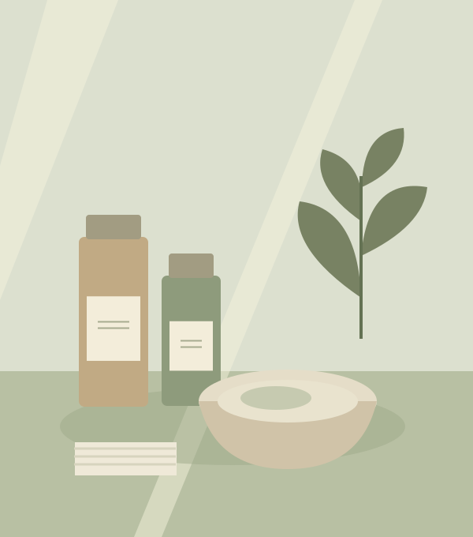

A little care.
A lovely reset.
A slower moment. A thoughtful touch.
Care that makes room for you, just as you are.
A considered menu. An unhurried experience.
A fresh perspective on everyday care.
A working design demo. Original illustrations, sample prices and memory-only planning. No clinic affiliation, medical advice or real appointments.
Your moment.
Your kind of care.
A little glow, a little calm, a little time to yourself.
Find a starting point in our illustrative care menu.
An in-person assessment by a qualified professional is needed for real care decisions. Menu descriptions are concepts, not treatment recommendations or outcome guarantees.

SMALL RITUALS. MORE ROOM FOR YOU.Good care begins
with being heard.
Not a new version of you. Just a little more space for the one you already are. Our concept puts the conversation before the care.
At your own pace
Time to explore, with no pressure to choose.
Clear from the start
Sample prices and durations, with every detail in view.
Personal, not prescriptive
Real suitability belongs with a qualified professional.
A softer start.
A little extra care.
Try 10% off a paid sample plan with WELCOME10.
One use per page session. Illustrative offer, no real purchase.
A little clarity
goes a long way.
Is this a real clinic booking?
This is an independent design demonstration, not an operational clinic website. Saving creates a local plan only. No clinic is contacted, no reservation is held, and no payment or email is sent.
Can you recommend a treatment?
This page provides no diagnosis or personalized medical advice. Descriptions and prices are sample content. Consult a qualified professional for assessment, suitability, risks and expected outcomes.
Where are my demo plans stored?
Only in browser memory until this page is refreshed or closed. The demo asks for no patient details, health records, account or contact information.
How do the sample times work?
One illustrative chair, Monday–Saturday, 09:00–12:00 and 13:00–17:00, in your local calendar dates. Dates run from tomorrow through the next 30 days. A labeled example block and your active local plans occupy time; cancellation releases it.
Come as you are.
Leave a little lighter.
A local plan, not an appointment. Nothing is sent.